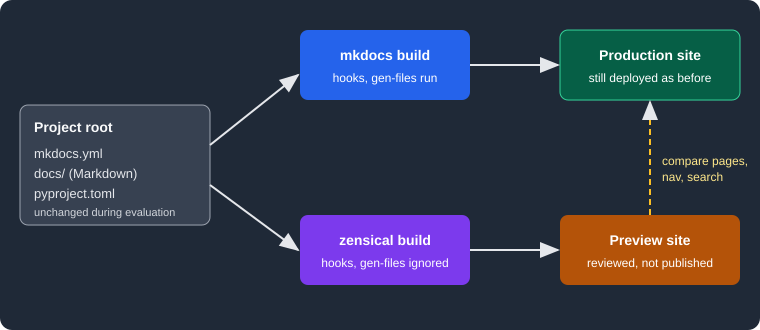

Migrating from Material for MkDocs
|
This content was generated with the assistance of AI and should be verified against the official documentation before being relied on in production. |
This page was written against Zensical 0.0.72 (PyPI, published 2026-10-23, alpha status) and Material for MkDocs 9.8.0,
and checked on 2026-10-26. Zensical is built by the team behind Material for MkDocs and reads an existing
mkdocs.yml, so a migration can be a series of small, reversible steps instead of a rewrite. The examples use the
small Pocket Units documentation project (a units-conversion library) that appears in the other Zensical pages.
Why migrate, and why not in one step
Material for MkDocs no longer receives new features. According to the Zensical announcement, only critical bug fixes and security updates continue, and the end-of-life date is 2027-05-05 (extended by six months at the 2026-11-05 launch, according to the upcoming changes page). The announcement also describes MkDocs, unmaintained since August 2024, as a supply chain risk. Building Material for MkDocs 9.8.0 prints this end-of-life notice and a second warning, printed by a dependency, recommending a third-party continuation of MkDocs called ProperDocs. The first notice comes from the Material team and points to Zensical. The second does not come from the Material team, and the official migration guide does not recommend it; this page does not evaluate it.
The official guide is built around a safety net: Zensical reads the same mkdocs.yml, so the same folder can be built
by either command, and the MkDocs build keeps working until you decide to drop it. A migration is therefore not a
conversion project. It is an evaluation that ends with replacing mkdocs by zensical in local and CI commands.
Gradual and reversible migration
The recommended order, in the words of the official guide, is to keep the MkDocs production deployment unchanged, build
the same project with Zensical using the existing mkdocs.yml, compare representative pages, navigation, search and
customizations, check that every plugin you depend on is supported, and switch local and CI commands only when you
trust the result.

The figure shows the evaluation set-up. Both builders read the same configuration and Markdown folder. The production site keeps coming from MkDocs; the Zensical output goes to a different folder and is only reviewed.
A worked example
The Pocket Units project is a Material for MkDocs site. Its configuration deliberately contains the three things that
Zensical does not support or ignores: a hook, the gen-files plugin and a variant key that MkDocs does not know.
site_name: Pocket Units
site_url: https://example.org/pocket-units/
theme:
name: material
variant: classic
palette:
scheme: default
nav:
- Home: index.md
- Guide: guide.md
plugins:
- search
- tags
- gen-files:
scripts:
- scripts/gen_pages.py
hooks:
- hooks/shout.py
markdown_extensions:
- admonitionThe hook appends a marker to every page and the script writes one extra page, generated.md:
# hooks/shout.py
def on_page_markdown(markdown, **kwargs):
return markdown + "\n\nHOOK-MARKER\n"
# scripts/gen_pages.py
import mkdocs_gen_files
with mkdocs_gen_files.open("generated.md", "w") as f:
f.write("# Generated\n\nGEN-MARKER\n")Source: Zensical docs: MkDocs plugins
Install both builders in one virtual environment and build twice. MkDocs gets an explicit output folder so that it does
not collide with the site folder that Zensical writes:
python3.13 -m venv .venv
.venv/bin/pip install zensical==0.0.72 mkdocs-material==9.8.0 mkdocs-gen-files
.venv/bin/mkdocs build -d out-mkdocs
.venv/bin/zensical build --cleanSource: Zensical docs: Build
Both commands finished. The Zensical run reported no problem:
Build started
No issues found
Build finished in 0.19sComparing the two outputs shows what the evaluation is for. The MkDocs output contains the hook marker in
index.html and guide/index.html, and a generated/index.html page. The Zensical output contains neither: no marker
and no generated page, and the sitemap lists two URLs instead of three. Zensical did not warn about either difference,
because hooks is documented as unsupported and the configuration of plugins it does not list is silently ignored.
Silence is the main risk of this approach, which is why the comparison step cannot be skipped: a clean Zensical build
does not prove that everything the old build did still happens.
The search index also moves: MkDocs writes search/search_index.json, Zensical writes search.json at the root of
the output. This matters only if something outside the site reads the index.
The classic variant
Zensical ships two theme variants, modern and classic. Both keep the same HTML structure. The classic variant
keeps the appearance of Material for MkDocs and is the one the official guide recommends for an existing Material
project, in particular when custom CSS or JavaScript depends on the established look. It is chosen with the variant
key of the theme:
theme:
name: material
variant: classicSource: Zensical docs: Theme variant
Three builds of the same project with the key absent, set to classic and set to modern show the practical effect.
With theme.name: material and no variant the page links the stylesheets assets/stylesheets/modern/main.4ab2de0c.min.css
and palette.b60ce83d.min.css, so the default is modern, not the Material look. With variant: classic the same
page links assets/stylesheets/classic/main.94dd801d.min.css and palette.813d4b3f.min.css. A project that only
changes the command from mkdocs to zensical therefore changes its appearance unless it adds the key. The hashes
belong to 0.0.72 and change between releases.
MkDocs with Material 9.8.0 accepted the variant key without error (the build succeeded), so the key can stay in the
shared mkdocs.yml while both builders are in use. With zensical.toml the same choice is written in the theme table:
[project.theme]
variant = "classic"Source: Zensical docs: Theme variant
Configuration files
Zensical keeps the standard MkDocs layout: configuration at the project root, Markdown under docs_dir, output under
site_dir. Page paths, directory URLs and the nav setting stay as they are. Moving to zensical.toml is not
required and the guide says mkdocs.yml can stay for as long as you like. While both builders are in use, add new
settings using the mkdocs.yml examples of the configuration reference so that both tools can read them.
Zensical Studio is described as becoming the place to assess compatibility and guide the final move to
zensical.toml; that is a planned feature. There is no conversion command in the 0.0.72 command line, which has only
new, build and serve. The equivalent of the example above, written by hand, is:
[project]
site_name = "Pocket Units"
site_url = "https://example.org/pocket-units/"
nav = [{ "Home" = "index.md" }, { "Guide" = "guide.md" }]
[project.theme]
variant = "classic"
[project.plugins.tags]
[project.markdown_extensions.admonition]This file built without issues and rendered the admonition from docs/index.md. Note that theme.name, the hook and
gen-files have no counterpart in it. When both zensical.toml and mkdocs.yml were present in the same folder,
0.0.72 used zensical.toml (changing site_name there changed the page title); the official pages consulted do not
state this precedence, so treat it as an observation. The -f option of zensical build selects a file explicitly,
and zensical build -f mkdocs.yml used the YAML file even though a TOML file existed.
Gaps and replacements
Settings
Among the mkdocs.yml settings, the official guide lists only one as unsupported: hooks. A hook module that only
adjusts content or navigation has no equivalent yet. Options are to move the logic out of the build (a script that
runs before zensical build and edits files), to replace it with a supported plugin or Markdown extension, or to keep
MkDocs for that project until support arrives. The official pages do not announce a date.
Command line flags and commands
The build and serve commands remain available, with these differences:
| MkDocs | Zensical | Replacement |
|---|---|---|
|
not supported; the 0.0.72 command prints |
the |
|
not supported; prints |
the |
|
not supported; prints |
the |
|
not provided; prints |
a publishing workflow, for example the GitHub Pages workflow created by |
|
not provided; prints |
declare dependencies explicitly in |
Source: Zensical docs: Build and preview
The messages were produced by running the commands with Zensical 0.0.72. The options that exist are -f/--config-file,
-c/--clean and -s/--strict for build. After an upgrade or when output looks stale, zensical build --clean is
the recommended first step. The publishing page of the official site describes the GitHub Pages and GitLab Pages
workflows that replace gh-deploy; see
Validation and Publishing. A project that kept pushing
a gh-pages branch with gh-deploy has to switch to the artifact-based Pages flow or write its own push step.
Plugins
Zensical does not run MkDocs plugins. It implements a list of them natively, so that the existing configuration keeps
working. The compatibility page lists 31 native implementations: api-autonav, audio, autoapi, autorefs,
awesome-nav, blog, callouts, exclude, gh-admonitions, glightbox, include-markdown, literate-nav,
llmstxt, macros, markdown-exec, markdownextradata, meta, mike, minify, mkdocstrings, nav-weight,
offline, privacy, redirects, rss, social, search, section-index, table-reader, tags and video. The
text of that page says "30" while its list contains 31 names; the count here is the number of names listed.
| Status | Plugins and advice |
|---|---|
Unsupported |
|
In progress |
|
Planned |
|
Not listed |
Configuration is silently ignored. The plugin is neither imported nor run. |
Source: Zensical docs: MkDocs plugins
Two rules shape the evaluation. First, settings of a plugin that is not listed vanish without any message, as the
gen-files section of the worked example showed. Second, a supported plugin validates its settings: adding
bogus_setting: true under tags made the Zensical build stop with Error: unknown tags option: bogus_setting, while
the settings the official page marks as ignored are accepted silently. Custom plugins written for the MkDocs plugin API
cannot run; the official page says a separate Module API is being prepared, available first in Zensical Spark. The
mkdocstrings handler for Python still has to be installed (pip install mkdocstrings-python); see
API Docs with mkdocstrings and
Blog, Tags and Plugins.
Templates and overrides
Zensical renders templates with MiniJinja instead of Jinja. MiniJinja is largely compatible but has no Python interpreter and cannot call arbitrary Python functions, so templates must use the available filters and tests. Material for MkDocs adapted its own templates; the last required changes shipped in 9.6.18, and overrides based on that version or later should generally work. For older or heavily customised overrides the guide advises comparing them with the current Material templates, replacing Python function calls with filters or tests, and building a representative set of pages to check every overridden block. See Theming and Customization.
Markdown, versioning and other features
Python Markdown and Python Markdown Extensions are supported as in MkDocs, and popular third-party extensions are said
to work unchanged; extra CSS and JavaScript also work with the classic variant. Versioning is the one area where the
workflow differs: mike is listed among the natively implemented plugins, and the compatibility section has its own
page about versioning. Read
Versioning and i18n before migrating a site that publishes
several versions.
Migration checklist
-
Pin the versions in
pyproject.tomlorrequirements.txt(zensical==0.0.72and the current Material release) and install both builders in one virtual environment. -
Leave the MkDocs deployment untouched. Build with
mkdocs build -d <other folder>andzensical build --clean. -
Add
variant: classicunder thematerialtheme if the visual result must match, and rebuild. -
Search
mkdocs.ymlforhooks, plugins missing from the native list,--theme,--site-dir,--use-directory-urls,gh-deployandget-depsin scripts and CI files. -
Compare the two outputs: file lists, sitemap entries, navigation, search, tags, redirects, generated pages, custom CSS and JavaScript, overridden templates. Use
zensical build --strictonce the first pass is clean. -
Replace each gap: workflow for
gh-deploy,pyproject.tomlforget-deps,autoapior a pre-build script forgen-files,extra_javascriptforopen-in-new-tab. -
Switch local and CI commands from
mkdocstozensicaland keepmkdocs.yml. Keep the old command available for a release cycle as the way back. -
Optionally move to
zensical.tomlwhen no builder other than Zensical needsmkdocs.yml.
The diagram summarises the checklist as a loop: the switch happens only after the comparison finds no difference that matters, and each difference sends you back to a replacement.
Pitfalls and version notes
-
Zensical 0.0.x is alpha. The project announced that 0.1.0, planned for 2026-11-05, starts a dependable release line. Pin the version and read the changelog before upgrading; see Roadmap and Upgrade Policy.
-
A successful Zensical build with an unsupported hook or plugin shows no warning. Compare output instead of trusting the exit status.
-
The default variant is
modern. Withoutvariant: classic, a Material site changes its look. -
Link validation is on by default in Zensical (see Validation and Publishing), so a first build may report broken links that MkDocs tolerated.
-
Search is only available in English in the Zensical interface.
-
In CI, caches are not recommended by the official publishing page, which is another difference from many MkDocs workflows.
-
Zensical Studio and Spark features (guided migration, Module API) are announced for the launch on 2026-11-05 and were not tried here.